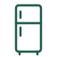
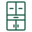
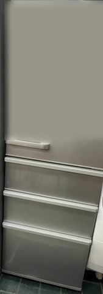
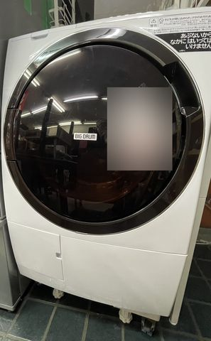
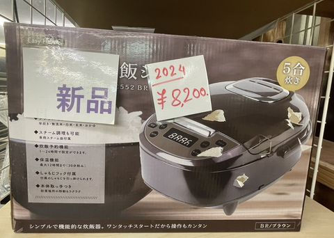

冷蔵庫・洗濯機・家具の
出張買取と片付け
熊本県合志市のリサイクル店です。生活家電と家具を、ご自宅まで伺って査定します。
店頭買取お店へお持ち込みください。
出張買取合志市から30km圏内へ伺います。出張費・査定料は無料。
※ 宅配買取は行っていません。
買取できる物
生活家電と家具が中心です。年式と状態を見て判断します。

冷蔵庫- 洗濯機
- 電子レンジ
- ガスコンロ
- ソファ・ソファベッド
- ダイニングテーブル

食器棚- カーペット
- カーテン
料金と買取の目安
フォームで品目と台数を選ぶと、その場で概算が出ます。片付けや回収は「費用 − 買取見込み ＝ お会計」で表示します。
仮の目安（調整中）現在の金額は共同代表との打合せ（2026年11月9日）で決めた仮の目安です。正式な金額に調整中で、最終額は訪問査定で確定します。
- 不用品回収（量の区分）¥6,000〜
- 片付け（間取り別・生前整理 1R・1Kの場合）¥15,000〜
- 買取の上限目安（例：冷蔵庫）最大 ¥20,000
買取の特典
- クオカード 500円分プレゼント
買取金額の合計が15,000円以上で、クオカード500円分をプレゼントします（訪問査定で確定した金額が対象）。 - 同日査定で買取額20%アップ
エアコンクリーニング・ハウスクリーニングと同じ日に買取・回収の査定をすると、移動と時間が省ける分を還元して査定額を20%アップします（例：10,000円の冷蔵庫→12,000円）。
金額はすべて目安です。最終額は訪問査定で確定します。
最近の買取実績
買取実績は準備中です。
写真と金額がそろいしだい掲載します。
買取の流れと出張エリア
- 1お申し込み
LINE・電話・フォームのどれかで。LINEなら写真で目安が分かります。 - 2電話で日時の相談
こちらからお電話して、伺う日時を決めます。 - 3訪問して査定
実物を見て金額をお伝えします。ご納得いただけたら運び出します。
出張エリアと費用
熊本県合志市から30km圏に伺います。出張費・査定料は無料（30km圏内）。圏外はご相談ください。
- 合志市
- 熊本市要確認
- 菊池市要確認
- 菊陽町要確認
- 大津町要確認
- 益城町要確認
- 嘉島町要確認
- 西原村要確認
- 御船町要確認
- 玉東町要確認
- 玉名市要確認
- 山鹿市要確認
- 宇土市要確認
「要確認」は地区によって圏外になる場合があります。お申し込みのときに確認します。宅配買取は行っていません。
本人確認書類
買取のときは、法律（古物営業法）で本人確認が必要です。次のどれかをご用意ください。
- 運転免許証
- マイナンバーカード（表面のみ）
- 健康保険証など（補助書類が必要な場合があります）
お金の受け取り方
査定にご納得いただいたら、その場で現金でお渡しするのが基本です。高額の場合は銀行振込でお支払いします。
回収・片付けの費用や商品代は、現金・クレジットカード・PayPay でお支払いいただけます。
ご相談・お申し込み
いちばん早いのはLINEです。写真を送っていただければ目安をお伝えします。
LINEは写真を送ると目安をお伝えできます（主な窓口）。電話はタップで発信します。営業時間：10:00〜19:00（年中無休）
片付けもまとめてご相談ください
販売中の商品
店頭で販売している家電・家具の一部です。配送もできます（郵便番号で配送料の目安が出ます）。

AQUA 冷蔵庫 355L（2024年）
¥65,000（税込）

ドラム式洗濯乾燥機（BIG DRUM）
¥45,000（税込）

炊飯器 5合炊き（新品・2024年）
¥8,200（税込）
最新の記事
- このブログについて
合志市のリサイクル店から、買取・片付け・遺品整理に役立つことをお伝えしていきます。